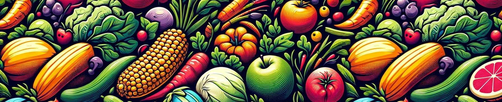

<!doctype html> <!-- `site.alt_lang` can specify a language different from the UI -->
<html lang="" data-mode="light">

<head>
    <meta http-equiv="Content-Type" content="text/html; charset=UTF-8">
    <meta name="theme-color" media="(prefers-color-scheme: light)" content="#f7f7f7">
    <meta name="theme-color" media="(prefers-color-scheme: dark)" content="#1b1b1e">
    <meta name="apple-mobile-web-app-capable" content="yes">
    <meta name="apple-mobile-web-app-status-bar-style" content="black-translucent">
    <meta name="viewport"
        content="width=device-width, user-scalable=no initial-scale=1, shrink-to-fit=no, viewport-fit=cover">
    <!-- Setup Open Graph image --> <!-- Begin Jekyll SEO tag v2.8.0 -->
    <meta name="generator" content="Jekyll v4.3.3" />
    <meta property="og:title" content="Walmarket" />
    <meta property="og:locale" content="en_US" />
    <link rel="canonical" href="http://localhost:4000/" />
    <meta property="og:url" content="http://localhost:4000/" />
    <meta property="og:site_name" content="Walmarket" />
    <meta property="og:type" content="website" />
    <meta name="twitter:card" content="summary" />
    <meta property="twitter:title" content="Walmarket" />
    <script
        type="application/ld+json"> {"@context":"https://schema.org","@type":"WebSite","headline":"Walmarket","name":"Walmarket","url":"http://localhost:4000/"}</script>
    <!-- End Jekyll SEO tag -->
    <title>Walmarket</title>
    <link rel="apple-touch-icon" sizes="180x180" href="assets/img/logo.png">
    <link rel="icon" type="image/png" sizes="32x32" href="assets/img/logo.png">
    <link rel="icon" type="image/png" sizes="16x16" href="assets/img/logo.png">
    <link rel="shortcut icon" href="assets/img/logo.png">
    <meta name="apple-mobile-web-app-title" content="Walmarket">
    <meta name="application-name" content="Walmarket">
    <meta name="msapplication-TileColor" content="#da532c">
    <meta name="theme-color" content="#ffffff">
    <link rel="preconnect" href="https://fonts.googleapis.com">
    <link rel="dns-prefetch" href="https://fonts.googleapis.com">
    <link rel="preconnect" href="https://fonts.gstatic.com" crossorigin>
    <link rel="dns-prefetch" href="https://fonts.gstatic.com" crossorigin>
    <link rel="preconnect" href="https://fonts.googleapis.com">
    <link rel="dns-prefetch" href="https://fonts.googleapis.com">
    <link rel="preconnect" href="https://cdn.jsdelivr.net">
    <link rel="dns-prefetch" href="https://cdn.jsdelivr.net">
    <link rel="preconnect" href="https://cdnjs.cloudflare.com">
    <link rel="dns-prefetch" href="https://cdnjs.cloudflare.com">
    <link rel="stylesheet"
        href="https://fonts.googleapis.com/css2?family=Lato&family=Source+Sans+Pro:wght@400;600;700;900&display=swap">
    <!-- GA --> <!-- Bootstrap -->
    <link rel="stylesheet" href="https://cdn.jsdelivr.net/npm/bootstrap@5.3.2/dist/css/bootstrap.min.css">
    <!-- Font Awesome -->
    <link rel="stylesheet" href="https://cdn.jsdelivr.net/npm/@fortawesome/fontawesome-free@6.5.1/css/all.min.css">
    <link rel="stylesheet" href="assets/css/jekyll-theme-chirpy.css"> <!-- JavaScript -->
    <!-- A placeholder to allow defining custom metadata -->
</head>

<body> <!-- Sidebar Start -->
    <aside aria-label="Sidebar" id="sidebar" class="d-flex flex-column align-items-end">
        <header class="profile-wrapper"> 
            <h1 class="site-title"> <a href="#">Walmarket</a> </h1>
            <p class="site-subtitle fst-italic mb-0"></p>
        </header> <!-- .profile-wrapper -->
        <nav class="flex-column flex-grow-1 w-100 ps-0">
            <ul class="nav"> <!-- Home -->
                <li class="nav-item"> <a href="#" class="nav-link"> <i class="fa-fw fas fa-home"></i> <span>HOME</span>
                    </a> </li> <!-- Features -->
                <li class="nav-item"> <a href="#features" class="nav-link"> <i class="fa-fw fas fa-list"></i>
                        <span>FEATURES</span> </a> </li> <!-- Vision -->
                <li class="nav-item"> <a href="#our-vision" class="nav-link"> <i class="fa-fw fas fa-eye"></i>
                        <span>VISION</span> </a> </li> <!-- Postmortem -->
                <li class="nav-item"> <a href="#project-postmortem" class="nav-link"> <i class="fa-fw fas fa-book"></i>
                        <span>POSTMORTEM</span> </a> </li> <!-- Contributors -->
                <li class="nav-item"> <a href="#the-team-behind-walmarket" class="nav-link"> <i
                            class="fa-fw fas fa-users"></i> <span>CONTRIBUTORS</span> </a> </li>
            </ul>
        </nav>
        <div class="sidebar-bottom d-flex flex-wrap align-items-center w-100"> <button type="button" </div>
                <!-- .sidebar-bottom -->
    </aside> <!-- Sidebar End -->
    <div id="main-wrapper" class="d-flex justify-content-center">
        <div class="container d-flex flex-column px-xxl-5"> <!-- The Top Bar -->
            <header id="topbar-wrapper" aria-label="Top Bar">
                <div id="topbar" class="d-flex align-items-center justify-content-between px-lg-3 h-100">
                    <nav id="breadcrumb" aria-label="Breadcrumb"> <!-- index page --> <span>Home</span> </nav>
                    <!-- endof #breadcrumb --> <button type="button" id="sidebar-trigger" class="btn btn-link"> <i
                            class="fas fa-bars fa-fw"></i> </button>
                    <div id="topbar-title"> Default </div>
                </div>
            </header>
            <div class="row flex-grow-1">
                <main aria-label="Main Content" class="col-12 col-lg-11 col-xl-9 px-md-4">
                    <p></p>
                    <!-- Sidebar Start -->
                    <aside aria-label="Sidebar" id="sidebar" class="d-flex flex-column align-items-end">
                        <header class="profile-wrapper"> 
                            <h1 class="site-title"> <a href="#">Walmarket</a> </h1>
                            <p class="site-subtitle fst-italic mb-0"></p>
                        </header> <!-- .profile-wrapper -->
                        <nav class="flex-column flex-grow-1 w-100 ps-0">
                            <ul class="nav"> <!-- Home -->
                                <li class="nav-item"> <a href="#" class="nav-link"> <i class="fa-fw fas fa-home"></i>
                                        <span>HOME</span> </a> </li> <!-- Features -->
                                <li class="nav-item"> <a href="#features" class="nav-link"> <i
                                            class="fa-fw fas fa-list"></i> <span>FEATURES</span> </a> </li>
                                <!-- Vision -->
                                <li class="nav-item"> <a href="#our-vision" class="nav-link"> <i
                                            class="fa-fw fas fa-eye"></i> <span>VISION</span> </a> </li>
                                <!-- Postmortem -->
                                <li class="nav-item"> <a href="#project-postmortem" class="nav-link"> <i
                                            class="fa-fw fas fa-book"></i> <span>POSTMORTEM</span> </a> </li>
                                <!-- Contributors -->
                                <li class="nav-item"> <a href="#the-team-behind-walmarket" class="nav-link"> <i
                                            class="fa-fw fas fa-users"></i> <span>CONTRIBUTORS</span> </a> </li>
                            </ul>
                        </nav>
                        <div class="sidebar-bottom d-flex flex-wrap align-items-center w-100"> </div>
                        <!-- .sidebar-bottom -->
                    </aside> <!-- Sidebar End -->
                    <h1 id="features">Features</h1>
                    <p><strong>Item
                            Browser:</strong> Showcasing a wide array of products with category sorting options.</p>
                    <div style="text-align: center;">  </div>
                    <p><strong>Shopping
                            Cart:</strong> Highlighting the grouping of selected items with their prices displayed.</p>
                    <div style="text-align: center;">  </div>
                    <p><strong>User
                            Accounts:</strong> Allows for login, registration, and safely storing payment information.
                    </p>
                    <div style="text-align: center;">  </div>
                    <h1 id="our-vision">Our Vision</h1>
                    <p></p>
                    <p>Walmarket is a service that is meant to help customers find farmer’s market quality goods from
                        the comfort of their own home, while also increasing the business of many local farmers. A
                        farmer’s market you can access anytime, anywhere solves many problems with traditional farmer’s
                        markets. Provided stock is available, Walmarket is accessible during the winter months, keeps
                        people with severe food allergies away from those vendors, and saves customers the drive if they
                        live in the city. On top of these benefits, Walmarket can save vast amounts of time; Instead of
                        wandering around a market, you can simply search for what you need on your device.</p>
                    <p>Customers using Walmarket will experience many options to ease their shopping experience and help
                        them find exactly what they are looking for, as well as the ability to explore new options they
                        may not have previously considered. Customers do not need to make an account with us to purchase
                        items, however an account allows us to provide them with additional services such as specific
                        product recommendations that fit their needs or interests, and tools to ease their ordering
                        process.</p>
                    <p>Farmers using our service will be able to share with others what products they have produced in a
                        fair environment, where items are advertised based on relevance to the customer, instead of
                        money spent. Sales records will be available to farmers to aid them in tracking which of their
                        products are best performing. To prevent fraud, farmers will be required to create an account
                        with us and undergo a short process to verify that their dealings will be legitimate.</p>
                    <p>As large industries dominate the market it gets increasingly troublesome for small town farmers
                        to advertise their produce and find people interested in buying. The difficulty of farmers
                        finding customers goes both ways, as many people interested in buying fresh produce do not know
                        where to begin looking; And those who do may not know how to sort through items free from
                        excessive preservatives, genetic modification, unethical pesticides, and other undesirable
                        aspects of mass-produced food. It is important people know what they are eating, and where to
                        find it, for the purpose of health issues, dieting, or protecting the environment from chemicals
                        used on crops.</p>
                    <p>For Walmarket to be considered a success, we must achieve multiple goals. Our primary goal is for
                        over 50% of farmers using Walmarket to report an increase in produce sales; This will tell us
                        that we have on average decreased the difficulty of finding adequate produce for many buyers. A
                        secondary goal is for every buyer to have interest in at least 10% of all available items; We
                        can estimate this goal to be met if each food group, and other food criteria such as
                        ‘non-harmful pesticide’ contains at least 10% of our total available items. If both goals are
                        met, we can assume that most buyers will have both found a farmer to buy from, and been
                        satisfied with the details of their purchase.</p>
                    <p></p>
                    <h1 id="project-postmortem">Project Postmortem</h1>
                    <p><strong>What went right?</strong></p>
                    <p>As a team, we excelled in communication. Any big changes that any team member wanted to make to
                        the code base was thoroughly discussed a whole team before implemented and potential
                        alternatives discussed. We were also able to establish informal roles early in the project. Each
                        team member was compartmentalized into a certain layer of the application (presentation, logic,
                        data) and regularly communicated with other team members on what they needed to bridge the seams
                        of the application layers. This made it so that at the end of an iteration, minor issues only
                        arose from small bugs and not bugs due to the crossing of application layers.</p>
                    <p><strong>What went wrong?</strong></p>
                    <p>We ran into some issues with branching. We decided at the beginning of the project that we would
                        create feature branches, and off that, additional user story and dev task branches. Specifically
                        in the second iteration, there was some confusion between team member where certain code was,
                        and some code was not being merged into the parent branches, causing some duplicate code that
                        had to be removed. Thus, although we think we did well at communicating, there was some minor
                        misunderstandings with branching.</p>
                    <p><strong>What took the most time?</strong></p>
                    <p>Understanding how to copy the database script to the device and set up the database was the most
                        time-consuming part for us. It took about 2 hours to figure out the process of running the
                        database script on an Android device, including the necessary steps. We encountered minor issues
                        with the use of single and double quotes in the script. Initially, using double quotes in our
                        insert statements resulted in null values being inserted into the database. After some
                        debugging, we realized the issue was with the double quotes. Switching to single quotes solved
                        the problem, and everything worked smoothly.</p>
                    <p>The second biggest challenge was storing images in the database. We saved the item images as
                        Binary Large Objects (BLOBs) and retrieved them directly from the database, converting them to
                        Bitmap for display. Initially, we created a separate package in the assets folder for the images
                        and copied them to the device as we did with the database script. However, decoding these images
                        with BitmapFactory resulted in bitmaps displaying black and white lines. Despite hours of
                        debugging, we couldn’t rectify the issue. Eventually, we opted to store the images in the
                        resources, which allowed us to successfully decode the binary data into the correct bitmap
                        format.</p>
                    <p><strong>How did the project change?</strong></p>
                    <p>The initial idea for our app was to create an online farmer’s market where customers can shop for
                        products and vendors can add items to the shop. Since the main component of the app is the
                        shopping ability, we focused on that and intended on adding the vendor functionality in a later
                        iteration. Little did we know, the shopping and item browsing functionality took more work than
                        expected. Had we more time, we would have created order history selections, viewable
                        descriptions for items, and specific interfaces only available for vendor accounts. Therefore,
                        as it is, our app is more of a regular grocery shopping app than a farmer’s market.</p>
                    <p></p>
                    <h1 id="the-team-behind-walmarket">The Team behind Walmarket</h1>
                    <p><strong>Cody Gordon:</strong> I learned a lot about git this term and managed to incorporate it
                        into a lot of my other courses/personal projects. I also got a lot better at estimating my time
                        when it came to the development tasks I was assigned and gained a deeper understanding of
                        effective design strategies that I look forward to bringing into future projects.</p>
                    <p><strong>Matthew Boychuk:</strong> I learned some major time management skills. Primarily that
                        each task I work on will certainly take longer than I expect it to. Looking back, on average
                        each task took approximately twice as long as I originally expected, due to finding missing code
                        that was overlooked, or simply patching bugs. I also learned that having a testing suite can
                        help find these bugs and save a lot of time troubleshooting; So, tests are worth it in the long
                        run.</p>
                    <p><strong>Daniyal Hasnain:</strong> This was my first major computer science course and it taught
                        me a variety of skills, namely familiarity with Git, software development lifecycle, and how to
                        design well (adhering to SOLID principles and design patterns). Putting this under the umbrella
                        of a team project furthered my desire to learn and adapt, allowing me to conclude the course
                        with gratifying results.</p>
                    <p><strong>Hritik Punj:</strong> Working in a team taught me valuable skills such as time management
                        and planning, but the most crucial lesson was learning how to effectively read documentation and
                        debug code. I also learned the importance of paying close attention to the guidance often
                        highlighted in bold within the documentation to avoid repeating common mistakes. My experience
                        expanded my understanding of various Android APIs and packages, including BitmapFactory.
                        Furthermore, I gained insight into the overall structure of Android, including its different
                        packages, assets, and resources, enhancing my knowledge of how the platform operates.</p>
                    <p><strong>Sydney Pratt:</strong> The most prominent lesson I have learned from working on this
                        project is how important it can be to separate the code base into layers (presentation, logic,
                        data). Doing this not only organizes the code and makes it more readable to contributors, it
                        also helps to prevent tightly coupled code and forces contributors to put more thought into what
                        their code does and where it belongs with respect to the application layers.</p>
                </main> <!-- panel -->
                <aside aria-label="Panel" id="panel-wrapper" class="col-xl-3 ps-2 mb-5 text-muted">
                    <div class="access"> <!-- Get 5 last posted/updated posts --> <!-- The trending tags list --> </div>
                </aside>
            </div>
            <div class="row"> <!-- tail -->
                <div id="tail-wrapper" class="col-12 col-lg-11 col-xl-9 px-md-4"> <!-- The Footer -->
                    <footer aria-label="Site Info"
                        class=" d-flex flex-column justify-content-center text-muted flex-lg-row justify-content-lg-between align-items-lg-center pb-lg-3 ">
                        <p>© <time>2024</time> <em class="fst-normal"></em>. <span data-bs-toggle="tooltip"
                                data-bs-placement="top"
                                title="Except where otherwise noted, the blog posts on this site are licensed under the Creative Commons Attribution 4.0 International (CC BY 4.0) License by the author.">Some
                                rights reserved.</span> </p>
                        <p>Using the <a href="https://github.com/cotes2020/jekyll-theme-chirpy" target="_blank"
                                rel="noopener">Chirpy</a> theme for <a href="https://jekyllrb.com" target="_blank"
                                rel="noopener">Jekyll</a>. </p>
                    </footer>
                </div>
            </div> <!-- The Search results -->
            <div id="search-result-wrapper" class="d-flex justify-content-center unloaded">
                <div class="col-11 content">
                    <div id="search-hints"> <!-- The trending tags list --> </div>
                    <div id="search-results" class="d-flex flex-wrap justify-content-center text-muted mt-3"></div>
                </div>
            </div>
        </div>
        <aside aria-label="Scroll to Top"> <button id="back-to-top" type="button" class="btn btn-lg btn-box-shadow"> <i
                    class="fas fa-angle-up"></i> </button> </aside>
    </div>
    <div id="mask"></div> <!-- JavaScripts --> <!-- JS selector for site. --> <!-- commons --> <!-- layout specified -->
    <script
        src="https://cdn.jsdelivr.net/combine/npm/jquery@3.7.1/dist/jquery.min.js,npm/bootstrap@5.3.2/dist/js/bootstrap.bundle.min.js,npm/simple-jekyll-search@1.10.0/dest/simple-jekyll-search.min.js"></script>
    <script defer src="assets/js/dist/commons.min.js"></script>
    <!-- Jekyll Simple Search loader See: <https://github.com/christian-fei/Simple-Jekyll-Search> -->
    <script> /* Note: dependent library will be loaded in `js-selector.html` */ SimpleJekyllSearch({ searchInput: document.getElementById('search-input'), resultsContainer: document.getElementById('search-results'), json: 'assets/js/data/search.json', searchResultTemplate: ' <article class="px-1 px-sm-2 px-lg-4 px-xl-0"> <header> <h2><a href="{url}">{title}</a></h2> <div class="post-meta d-flex flex-column flex-sm-row text-muted mt-1 mb-1"> {categories} {tags} </div> </header> <p>{snippet}</p> </article>', noResultsText: '<p class="mt-5"></p>', templateMiddleware: function (prop, value, template) { if (prop === 'categories') { if (value === '') { return `${value}`; } else { return `<div class="me-sm-4"><i class="far fa-folder fa-fw"></i>${value}</div>`; } } if (prop === 'tags') { if (value === '') { return `${value}`; } else { return `<div><i class="fa fa-tag fa-fw"></i>${value}</div>`; } } } }); </script>
</body>

</html>